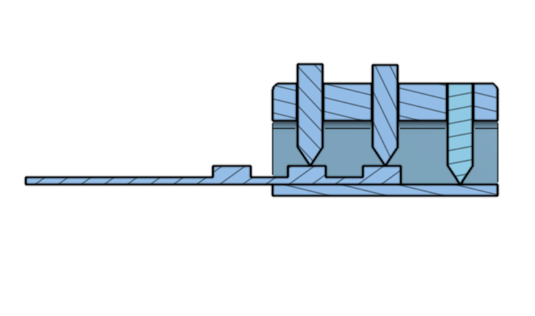
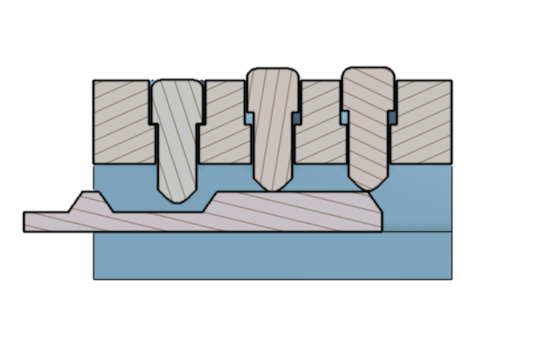
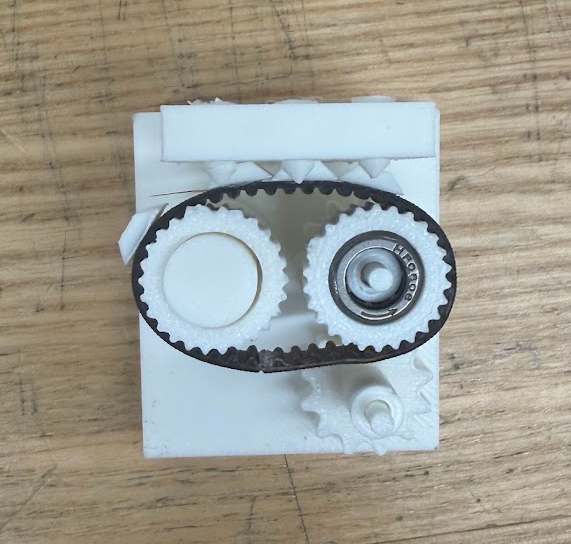
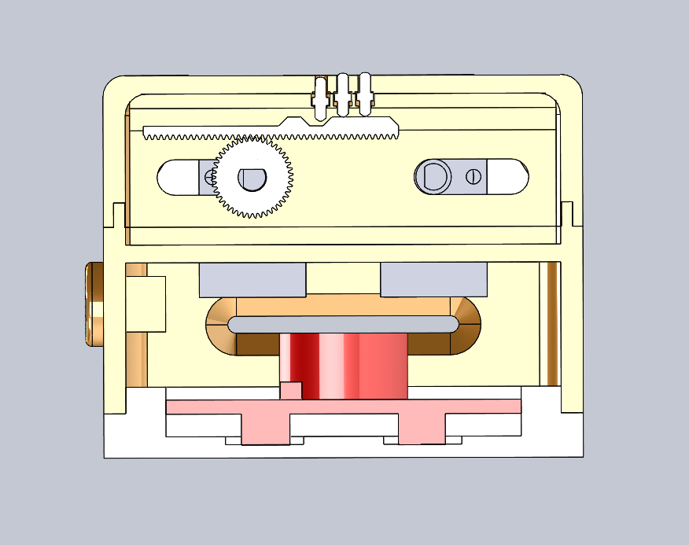
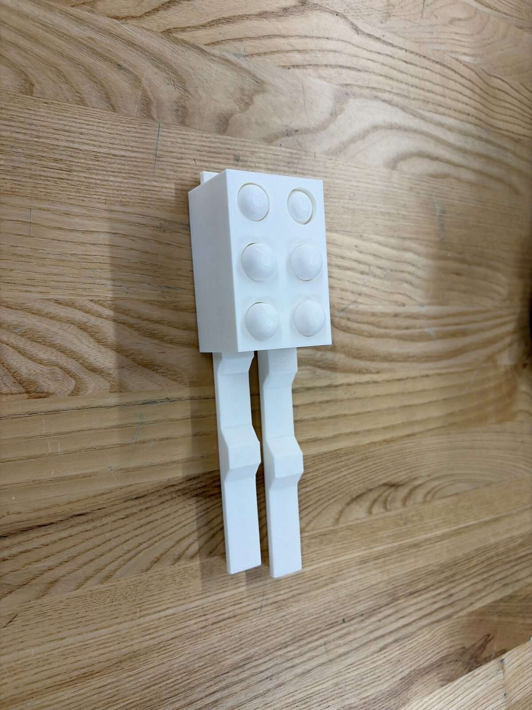
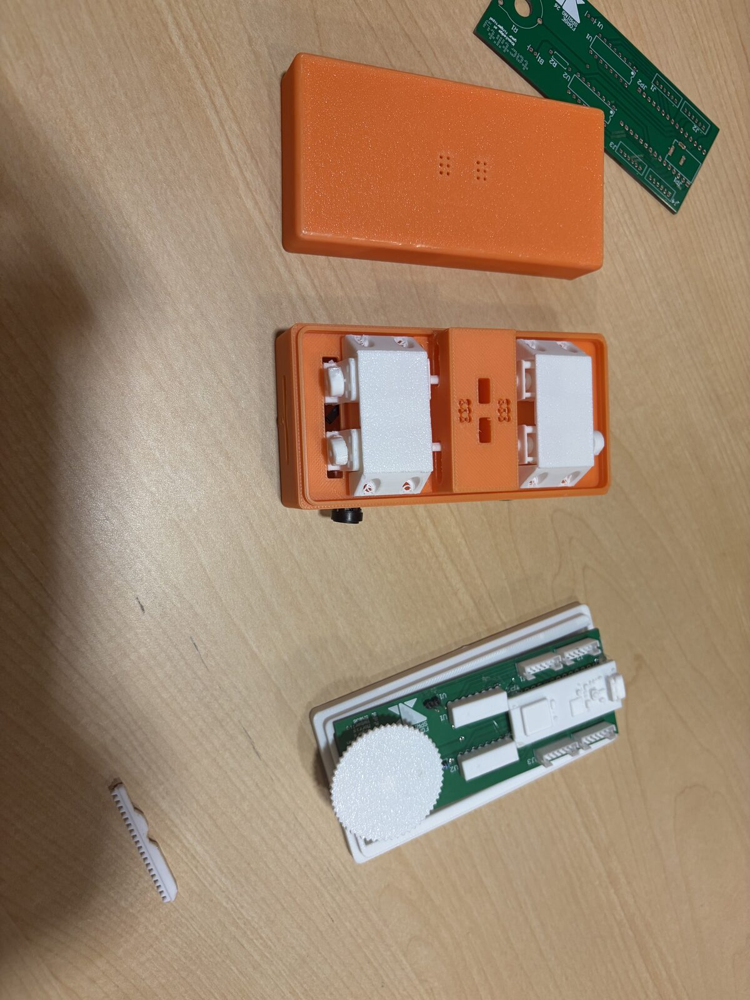
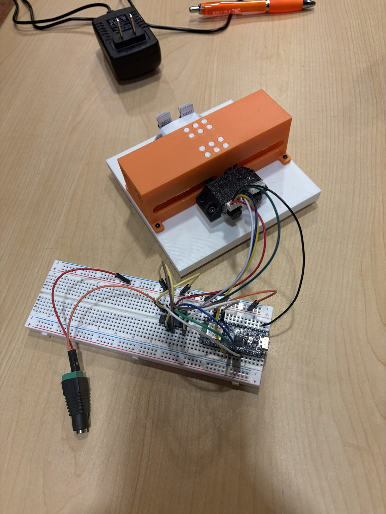

A hardware device that translates PDF text into refreshable Braille, letting a reader feel one line of characters at a time instead of relying on a fixed embossed page.
Standard Braille books and displays are expensive and bulky, and commercial refreshable displays actuate each dot individually — precision electronics too small, and too costly, to fit on a limited budget. Our goal as a six-person hardware team on Forge, a student product-design team, was to design a lower-cost refreshable display that could take a PDF, translate the text to Braille, and physically render it one line at a time.
The mechanism I designed shifts the size problem instead of solving it head-on: rather than squeezing individual actuators behind every dot, I moved the size constraint into the gaps between letters, keeping each dot at the true 1.5 mm Braille standard. The actuation itself works like a door lock — inserting a key bumps pins to different heights based on the key's geometry. I applied that same idea to a Braille cell, using two N20 DC motor-driven "keys" (one per column) to shift the pins into the correct pattern for any letter, number, or symbol in the Braille alphabet.
Beyond the mechanical design, I organized our ME system meetings and led design reviews alongside our EE Chief, keeping the mechanical sub-team coordinated as the device came together.
Fitting a reliable actuation mechanism within a true 1.5 mm Braille dot pitch, on a one-semester timeline and a $350 budget for the whole project.
Designed a lock-and-key style actuation mechanism in Onshape driven by two N20 motors per cell, iterating through FDM and SLA prototypes to hit standard Braille dimensions.
A working, low-cost prototype of a device that normally costs thousands of dollars — translating real PDF text into physical Braille, built and demoed by a six-person team.






